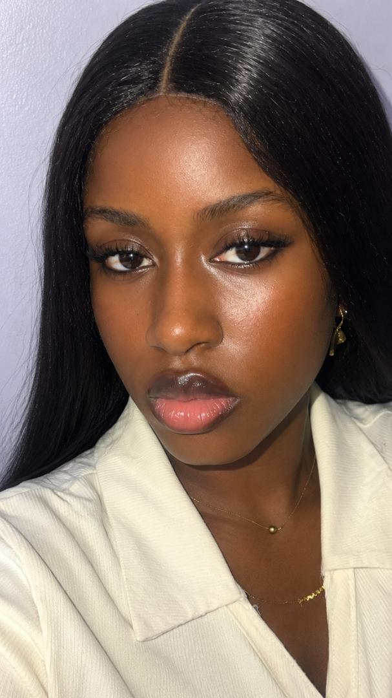

Hello, I'm
PraiseOwolabi
I'm a front-end developer
Computer Science graduate and software developer. I build responsive, user-focused web applications and I am exploring cloud computing, AI and distributed systems.

Praise Bukolami
Owolabi
Software Developer
B.Sc. Computer Science
Ajayi Crowther University
01About
I build front-end experiences that are fast, accessible and a little bit unexpected.
I'm a Computer Science graduate from Ajayi Crowther University with a passion for software development, problem-solving and technology-driven innovation. I enjoy understanding how applications work, improving user experiences and turning requirements into functional solutions.
My journey includes building user interfaces with modern web technologies, a professional frontend internship at SoftAlliance, and a four-week internship at Auspify Technologies where I built four live projects. My final-year project, the Career Navigation Assistant, applies software engineering to help students choose technology careers.
Beyond code, leading as General Secretary of the NACOS ACU Chapter and working as an executive assistant taught me communication, organisation and teamwork. I'm particularly interested in software engineering, cloud computing, distributed systems and artificial intelligence, and I want to keep building reliable, scalable and useful software.
02Selected work
More on GitHub: smaller builds, practice projects and challenges.
03Skills
Tap a skill to see the projects where I used it. The number shows how many.
04Experience
Frontend Developer Intern, SoftAlliance
Contributing to frontend development tasks in a collaborative software team: reusable UI components, responsive layouts and interface improvements, using Git and GitLab. Project details are kept general to respect company confidentiality.
Front End Development Intern, Auspify Technologies
Completed a four-week remote programme by designing, building and deploying four live projects: an e-commerce storefront, a sci-fi to-do app, a live weather observatory and a React analytics dashboard.
Executive Assistant, Spartan Strategy Security Resources
Coordinated administrative and operational activities, prepared proposals, reports and invoices, and handled client communication and follow-up. This work strengthened my organisation, accountability and communication, which I bring to every software team.
05Education and awards
B.Sc. Computer Science (ICT option), Ajayi Crowther University
Graduated with Second Class Upper honours. Final-year project: the Career Navigation Assistant, a platform that helps Computer Science students explore technology careers.
General Secretary, NACOS ACU Chapter
Supported chapter administration, documentation, communication and the coordination of student activities within the computing community.
Most Influential Female, Ajayi Crowther University
Award recognising influence and contribution within the university community.
Award of Recognition, Ajayi Crowther University
Recognition from the university for contribution and service.
Disciplinary Prefect Award, Yandutse College, Kano
Recognition for leadership and responsibility as a school prefect.
06Contact
Have a project, an internship or a question? Say hello.
Open to software development opportunities, internships, technical collaborations and selected projects. Based in Nigeria.
Download CV